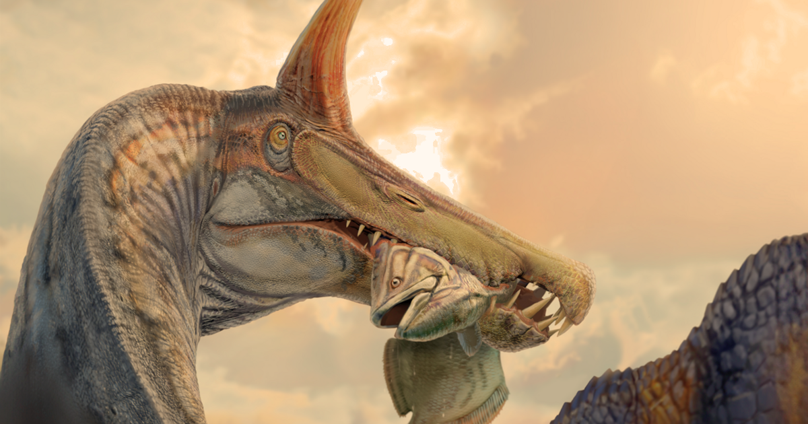

Spinosaurus mirabilis is a spinosaurid theropod dinosaur that Lived during the
Cenomanian age in the Cretaceous era. It was discovered in 2000, and described
in 2026. It can be easily recognised by the tall 2-foot-tall crest above its
forehead. It lived more inland than other Spinosaurus species, being discovered
in Niger, suggesting it lived a more land-based lifestyle.
| Weight: 5-7 tons (~10,000-14,000 lbs) |
| Diet: Large fish |
| Location: Farak Formation, Nigeria |
| Lived with: B. ingens, R. garasbae, A. baharijensis |
The fossils of S. mirabilis were collected from outcrops of the Farak Formation
of Niger in 2000, 2019, and 2022. The excavations were led by paleontologist
Paul Sereno. Most of the fossil material comes from the holotype, which has been
accessioned as MNBH JEN1, consisting of a fragmentary skull with 5 teeth still
intact. The second specimen, MNBH JEN2, includes a nasal crest, fragments of the
neck vertebrae, fragments of the dorsal vertebrae, part of the ischium, and part
of the left femur.